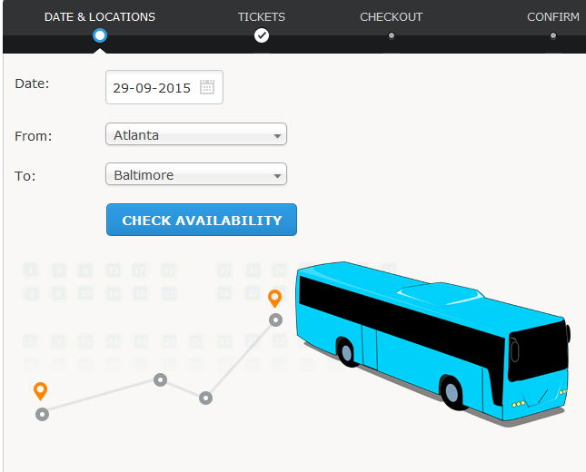

Projects:
As I'm a computer system engineering student so I have done some of the projects as follows:1.Bus reservation system
So Bus reservation system was implemented using C++ and OOP. Through this sytem users are able to check any detail about the buses such as bus numbers,number os seats,user can also reserve their seats and also the departure or incoming time of buses.
2.Chatbot
Chatbot was implemented using pytorch library in googlecolab notebook using OOP Python and JS. This userfriendly chat bot was implemeted for a cafe so it can gives user the details about menu also can tell details about their order and if user want some additional information asuch as suggestion for a song or movie it can give suggestion and is able to tell jokes too.
3.Teacher student interface
Teacher student interface was basically a client server intrface built using socket programming technique in Unix operating system.This interface helps in communication between teacher(server/admin) and student(clients) it has special password set for admin.It helps in communication between admin ad clinets and excepts questioning answering files assignments sharing is also possible in this interface using same WAN connection.